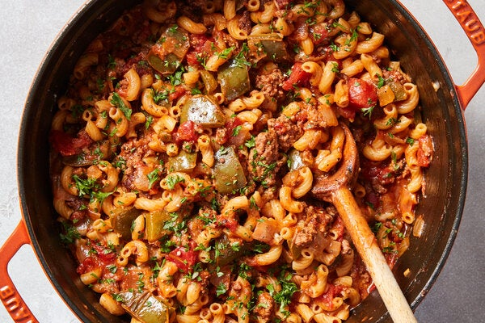

American Goulash

An American bastardization of the traditional Hungarian dish of Goulash
This recipe contains all the essential food groups in one Dutch Oven. Another weeknight classic, the cheesy flavor and rich base
made with beef broth and tomato juice are perfect for kids and adults alike.
- 2 tbsp olive oil
- 1 large bell pepper, red or green, diced
- 1 medium yellow onion, diced
- 1 pound lean ground beef
- 2 tbsp minced garlic (about 5 cloves)
- 1 tsp dried thyme
- 1.5 tsp dried oregano
- 1.5 tsp sweet paprika
- 1 tbsp tomato paste
- 28 oz small diced or crush tomatoes
- 2 tbsp Worcestershire sauce
- 1.25 cups uncooked macaroni
- 1 cup shredded sharp Cheddar
- In a large pot or Dutch oven, heat the olive oil over medium heat. Add the bell pepper and onion and cook, stirring occasionally, until the onion is translucent, 4 to 6 minutes.
Add the garlic, thyme, paprika, oregano, salt and pepper and cook for 30 seconds, until the garlic is fragrant.
- Add the ground beef and cook, stirring often and breaking up the meat with a spoon, until no longer pink, 3 to 5 minutes. Add the tomato paste and cook for 1 minute.
- Pour in the broth, crushed and diced tomatoes and Worcestershire sauce; bring to a boil.
Stir in the macaroni, reduce the heat to medium-low and cook, stirring occasionally and scraping the bottom of the pot, until the pasta is cooked and the liquid in the pan has thickened considerably, 18 to 20 minutes.
- Remove from the heat and stir in the Cheddar. Taste for seasonings and add salt and pepper, if needed.
Serve in bowls, topped with fresh parsley. (The goulash will continue to thicken as it sits. If desired, add a splash of beef broth when reheating.)